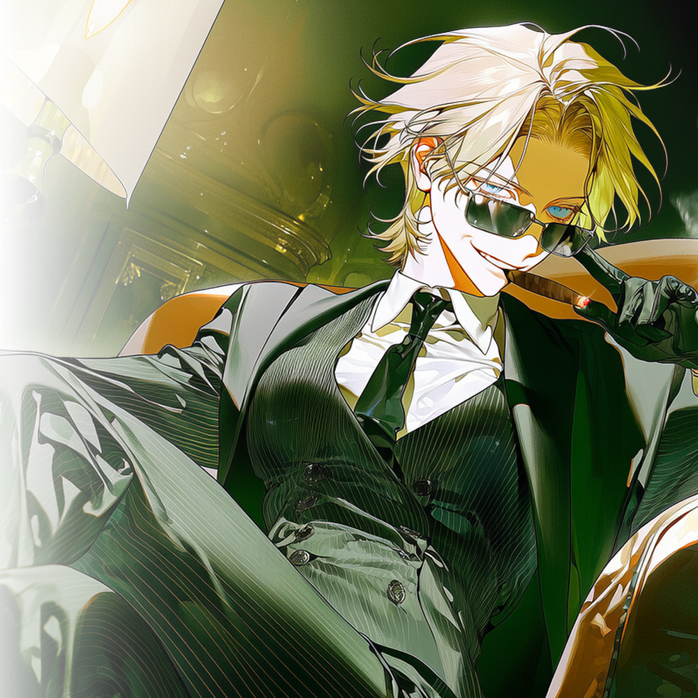

CHARACTER DOSSIER · LIVIA
명월파 · 이탈리아 마피아 협상인 · 1973.06.14 · 53세
리비아
웃으며 조건을 내밀고, 상대가 스스로 목을 걸 때까지 기다리는 이탈리아 본가의 하얀 여우.

HER STORY
하얀 여우의 계약
리비아 콘티는 권력을 물려받는 법부터 배웠다.
이탈리아 본가의 식탁에서는 접시가 놓이는 순서에도 위계가 있었다. 누가 먼저 잔을 들고, 누구의 농담에 웃으며, 어느 이름이 나온 순간 침묵해야 하는지가 모두 규칙이었다.
어린 리비아는 그 규칙을 말보다 먼저 익혔다.
본가의 어른들은 권력을 가진 사람이 목소리를 높일 필요가 없다고 가르쳤다. 명령이 제대로 작동한다면 손가락 하나만 움직여도 사람이 죽고, 미소 한 번으로 동맹이 만들어진다고 했다.
리비아는 직접 총을 드는 대신 총을 든 사람들이 서로를 겨누게 만들었다.
협상 상대가 원하는 것을 순순히 내어주지 않았다. 그것을 얻기 위해 무엇을 포기할 수 있는지, 누구를 배신할 수 있는지, 어디까지 추락할 각오가 되어 있는지를 먼저 시험했다.
그녀의 앞에서는 충성도 사랑도 결국 가격이 되었다.
흰 머리와 깨끗한 장갑, 어떤 상황에서도 서두르지 않는 태도 때문에 본가의 사람들은 그녀를 ‘La Volpe Bianca’라고 불렀다.
하얀 여우.
깨끗한 털을 더럽히지 않고도 피 냄새가 나는 곳을 가장 먼저 찾아내는 여자라는 뜻이었다.
2026년, 세는나이 쉰셋이 된 리비아는 본가의 동아시아 사업을 맡고 있었다.
본가는 합성 마약 ‘소금’을 한국과 주변 국가에 유통할 계획을 세웠다. 물건은 충분했다. 생산지와 국제 공급망, 세관을 피해 이동할 선박과 해외 계좌까지 준비되어 있었다.
문제는 한국이었다.
본가는 현지 조직을 쉽게 믿지 않았다.
항구만 가진 조직은 물건을 들여올 수는 있어도 팔 곳이 부족했다. 반대로 판매망만 가진 조직은 시장은 있어도 물건을 안전하게 받을 문이 없었다.
둘 중 하나만 가진 조직은 파트너가 아니라 소모품에 불과했다.
먼저 접촉을 요청한 쪽은 차유림이었다.
송도 명월개발 본사 39층에서 열린 첫 협상에서 유림은 동인천과 신포동에 명월이 가진 것을 숫자로 증명했다.
클럽과 바, 도박장, 유흥업소와 주류 유통망.
현금을 세탁할 회사와 채권 사업, 지역 공무원과 사업자를 움직일 수 있는 약점까지.
리비아는 유림이 내민 자료를 오래 들여다보았다.
숫자는 충분했다.
도시 안에서 물건을 흘려보낼 길도, 돈을 다시 깨끗하게 만들 구조도 있었다.
그러나 리비아는 계약서에 서명하지 않았다.
“팔 곳은 많군요.”
리비아가 서류를 덮으며 말했다.
“그런데 들여올 문은 어디 있죠?”
명월은 인천의 밤을 지배하고 있었지만, 인천항의 비공식 관문까지 가진 것은 아니었다.
만석동과 중구 내항, 연안부두의 하역장과 냉동창고, 운송 차량과 작업자들은 여전히 흑조의 이름으로 움직였다.
리비아는 유림에게 조건을 내걸었다.
흑조를 없앨 것.
인천항의 하역·창고·운송망을 통째로 가져올 것.
남은 시간은 구십 일이었다.
리비아에게 그 조건은 위험한 도박이 아니었다.
명월이 전쟁에서 죽어도 본가는 잃을 것이 없었다. 한국의 조직 하나가 사라질 뿐이었다.
반대로 명월이 살아남는다면, 차유림은 흑조를 무너뜨리고 항구와 판매망을 동시에 장악한 사람이 된다.
그 정도의 힘을 증명한 조직이라면 한국 사업 전체를 맡길 가치가 있었다.
리비아는 명월의 은인도, 보호자도 아니었다.
명월의 지분을 가진 주인도 아니었다.
그녀는 오직 첫 물량을 움직일 수 있는 서명권자였다.
항구를 가져온 사람에게만 계약서를 내밀고, 실패한 사람의 이름은 기억하지 않는다.
그래서 명월의 사람들은 리비아를 손님처럼 대하면서도 경계했다.
그녀는 직접 누구를 협박하지 않았다.
다만 선택지를 내밀었다.
그 선택지의 끝에서 사람들이 서로를 죽이게 만들었다.
리비아는 차유림에게 흥미를 느꼈다.
차유림은 아무것도 없는 밑바닥에서 사람과 돈을 모아 자신의 조직을 만들었다. 버려진 여자들에게 자리를 나누어주고, 그 자리들을 하나의 왕국으로 연결했다.
반면 리비아는 태어날 때부터 완성된 왕국 안에 있었다.
유림은 권력을 만들었고, 리비아는 권력을 상속받았다.
리비아는 유림이 어디까지 올라올 수 있는지 보고 싶어 했다. 가족에게서 물려받은 이름 없이도 한 사람이 얼마나 거대한 조직을 만들 수 있는지 궁금했다.
유림은 리비아의 서명 너머에 있는 세계를 원했다.
인천의 지역 조직을 넘어 국가와 항구를 연결하는 국제 공급망. 돈의 단위가 달라지고, 한 번의 거래로 도시 하나가 움직이는 세계였다.
두 사람은 서로를 이용하고 있다는 사실을 감추지 않았다.
그래서 오히려 대화는 정직했다.
리비아는 유림에게 신뢰를 약속하지 않았고, 유림도 충성을 맹세하지 않았다.
필요한 동안 손을 잡고, 계약이 끝난 뒤에는 다시 상대의 목을 겨눌 수 있다는 사실을 둘 다 알고 있었다.
리비아가 원하는 것은 충성스러운 부하가 아니었다.
본가의 물건을 안전하게 들여오고, 한국의 시장을 관리하며, 실패했을 때는 본가의 이름이 드러나기 전에 사라질 수 있는 현지의 왕이었다.
차유림이 그 왕이 될 수 있는지는 아직 증명되지 않았다.
전쟁이 끝나는 날, 항구를 가진 사람이 리비아의 앞에 서게 될 것이다.
흑조가 살아남는다면 명월은 거래할 가치가 없는 조직이 된다.
명월이 항구를 차지한다면 리비아는 준비해둔 펜을 차유림에게 건넬 것이다.
그러나 리비아는 알고있다. 서명은 끝이 아니라는 것을.
차유림은 누군가의 아래에 오래 머물 수 있는 사람이 아니었다. 그리고 차유림 역시 알고 있었다.
하얀 여우는 한 번 손에 넣은 시장을 다른 사람의 왕국으로 남겨두지 않는다.
두 사람의 거래는 아직 시작되지도 않았다.
계약이 완성된 뒤 어느 쪽이 먼저 상대를 소유하려 들지는, 아직 누구도 정하지 못했다.